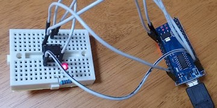
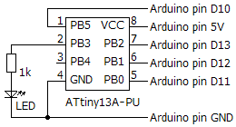

ArduinoとATtiny13Aを使う
2018年05月30日 カテゴリー：実験等

自作エフェクターをやっていてマイコンにも興味があるという方は多いだろうと思います。今回ArduinoとAVRマイコンATtiny13Aを使ってみたので、簡単にまとめておきます。※Arduino Nano互換機、Arduino UNO互換機で動作確認しました。
＜Arduinoを使う＞
Arduino本体については、Amazon等でArduino UNOやArduino Nanoの互換機が安価で手に入るのでそちらを購入しても問題ないと思います。※ただし、ドライバのインストールが必要な場合があります。参考ページ→Arduino NANO 互換品(CH340チップ使用)のデバイスドライバー CH341SER.ZIPダウンロードページ
※Arduino Nano互換機(CH340チップ使用)をAVRライターとして利用した場合に、書き込みができなくなる現象が起こりました。別のArduino UNO互換機（What's Next Yellow）では大丈夫でした。（2018年10月31日追記）
・Arduino IDE（開発環境）をダウンロード、インストール
公式サイト解説→Getting Started with Arduino and Genuino products
・ボード上のLEDを点滅させる（Ｌチカ）
1) PCとArduinoをUSBケーブルで接続、Arduino IDEを実行
2) ファイル→スケッチ例→01.Basics→Blink
3) ツール→ボード→（使っているArduinoの種類を選択）
4) ツール→シリアルポート→（Arduinoを接続しているポートを選択）
5) スケッチ→マイコンボードに書き込む
公式サイト解説→Getting Started with Arduino and Genuino UNO
書き込みに成功すれば、すぐにLED点滅が始まります。※古いArduino Nanoを使う場合はツール→プロセッサ→ATmega328P (Old Bootloader)とする必要があるようです。
＜ATtiny13Aを使う＞
マイコンにプログラムを書き込むには、通常書き込み機器（ライター）が必要です。今回はArduinoをAVRライターにします。以下のようにArduinoにスケッチを書き込みます。
1) PCとArduinoをUSBケーブルで接続、Arduino IDEを実行
2) ファイル→スケッチ例→11.ArduinoISP→ArduinoISP
3) ツール→ボード→（使っているArduinoの種類を選択）
4) ツール→シリアルポート→（Arduinoを接続しているポートを選択）
5) ツール→書込装置→AVRISP mkII
6) スケッチ→マイコンボードに書き込む
そしてATtiny13Aを使う準備をします。下記ページで詳細に解説されています。
Arduino IDE で ATtiny 他の開発→Arduino IDEにATtiny10/13の開発環境を組み込む
ATtiny13AにLED点滅のスケッチを書き込みます。
▽接続図

▽スケッチ
void setup() {
pinMode(3, OUTPUT);
}
void loop() {
digitalWrite(3, HIGH);
delay(500);
digitalWrite(3, LOW);
delay(500);
}
1) 接続図の通り接続し、PCとArduinoをUSBケーブルで接続、Arduino IDEを実行
2) 上記スケッチを入力
3) ツール→ボード→ATtiny13(bitDuino13)
4) ツール→Clock→1.2MHz(Internal)
5) ツール→シリアルポート→（Arduinoを接続しているポートを選択）
6) ツール→書込装置→Arduino as ISP
7) スケッチ→マイコンボードに書き込む ※1回目失敗する場合2回行う
クロック周波数を変えるとdelay関数等の時間も変わります。クロック周波数が低い方が消費電流が低いので、特に必要がない限りは1.2MHzでよいと思います。